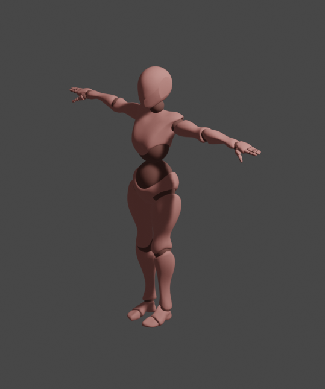

La anatomía es la rama de la biología que se ocupa del estudio de la estructura y organización de los organismos vivos, desde los niveles macroscópicos hasta los niveles microscópicos. Se enfoca en la descripción, identificación y clasificación de las diversas partes que componen los organismos, como órganos, tejidos, células y sistemas.
Ramas de la anatomía
La anatomía se divide en diferentes ramas, incluyendo la anatomía descriptiva, que se ocupa de la descripción de las estructuras anatómicas; la anatomía comparada, que compara las estructuras de diferentes especies para buscar similitudes y diferencias; la anatomía funcional, que se enfoca en el estudio de las funciones de los órganos y tejidos; y la anatomía clínica, que se aplica en el campo de la medicina para comprender las estructuras corporales y sus relaciones en el diagnóstico y tratamiento de enfermedades.
El conocimiento de la anatomía es fundamental en campos como la medicina, la biología, la fisioterapia, la cirugía, la odontología y otras disciplinas relacionadas con la salud y la biología. A través del estudio de la anatomía, se obtiene una comprensión detallada de la estructura y función de los organismos vivos, lo que permite avanzar en la investigación científica y en la práctica clínica.
 Producida por estudiantes de inacap.lo que se espera lograr con este projecto es poder ayudar de manera positiva a los estudiantes de medicina, ya que sabemos lo dificil que es llegar a comprender los ramos de esta carrera, es por eso que buscamos darles un apoyo ofreciendoles una manera divertida, didactica e inmersiva para que los estudiantes puedan aprender las diferentes partes que posse el cuerpo humano, entre otros. es por eso que proponemos una visualización mas personalizada acerca de la antomia de los seres vivos demostrando de manera detallada cada una de las partes que lo componen, dando una explicación y una experiencia simple para cada uno de los estudiantes.